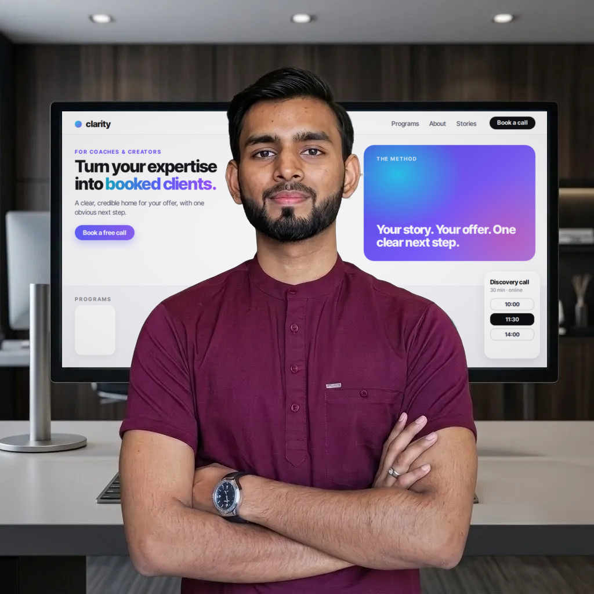

Professionally designed landing pages that turn your expertise and offer into a clear, credible online experience.
Built to build trust, communicate your value, and turn visitors into potential clients.